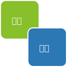

01 藍芽智慧鎖 研究與製作
透過資料、相關產品UI蒐集，藉由分析找出各產品介面
特色、使用性、學習成本等等各項因素，並且加以改良，作為
第一步設計wireframe的依據。
並且在上述的資料分析與蒐集中整理出我們未來在設計上共同
遵守的五點設計原則：
合理用色
直觀敘述
清楚排版
明確回饋
使用頻率
易用性測試上我們訂下完整的測試要件包含受測者篩選、受測 者基本資料調查、場域與設備、使用者任務情境以及利用SUS 系統量表作為分析依據，統整出錯誤後再進一步設計。

Logo設計
由藍牙智慧鎖發想，縮寫英文iKey，圓角設計帶來安穩和親和感。
Icon設計
以圓角為統一設計元素，依照使用者測試中易用性較容易識別之條件設計。

用色挑選
藍色給人可靠、智慧的感覺；綠色有准許行動之意，給人便捷快速的感覺，剛好符合智慧所應有功能特性。
透過研究、測試、分析，通過易用性分析，我們將線框圖測試中使用者較易出錯的步驟、不易識別的icon以及不合理的擺放位置都修正。而在這項作業中，不只學習到介面設計與流程，還學習到利用測試系統量表使自己的設計更具說服力、更專業。